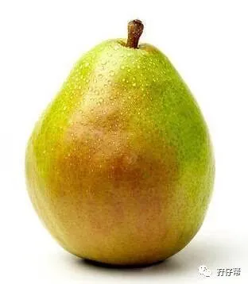
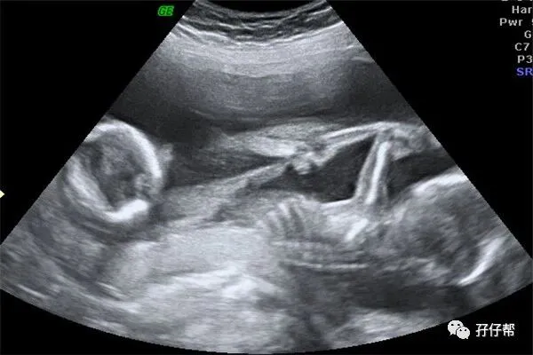
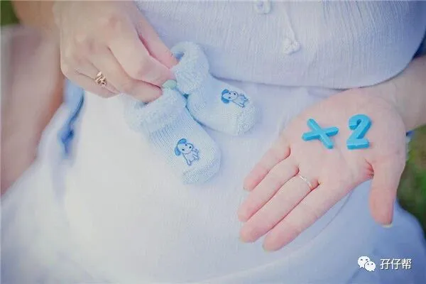
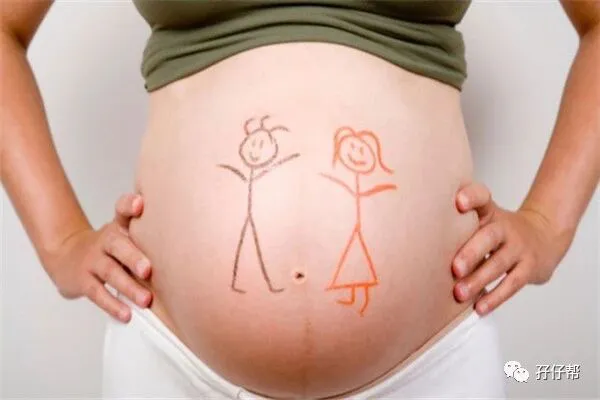
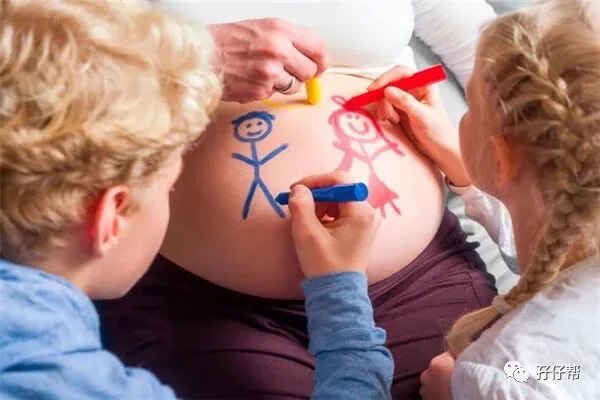
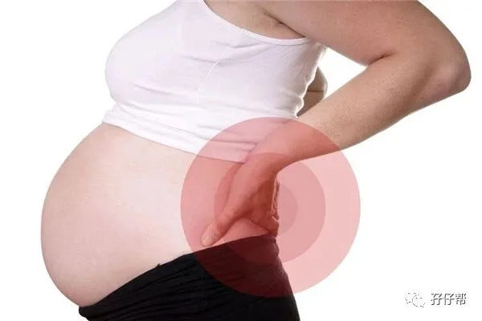
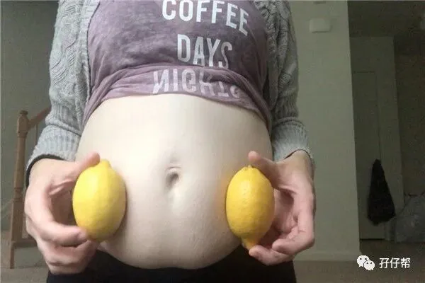
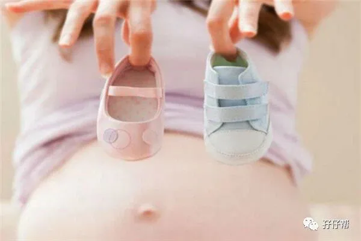

⬆⬆关注孖仔帮，与您分享双胞胎育儿经⬆⬆
文|圆圈妈 一个文思如尿崩的双胎妈妈
图|来自网络
双胎妊娠的孕17周
【01】两胎儿的发育情况
孕17周的胎宝宝有雪梨那么大了，从头到臀部长13.5CM，约162G，如图所示⏬⏬：
孕17周的双胞胎胎儿发育图⏬⏬：
B超孕17周的双胞胎胎儿影像图⏬⏬：
【02】圆圈妈的孕期回忆录
ℹ进入孕17周，我的胎动怎么还不来？
虽然17周的胎儿的小胳膊，腿和关节都发育完成，可是我依然感觉不到胎动。
据说，若是二胎妈妈，这个孕周已经能轻松GET到里面的动静了。
我曾经很努力地盯着肚皮看，甚至拿着手机开启视频模式，企图捕捉到一次胎动的蛛丝马迹，可能真的是肚皮太厚了，依然没有发现。
自从那次把肠子蠕动当成胎动闹乌龙之后，我就没有太多关注胎动这回事了，有时候胃会发出“咕噜咕噜”的吐泡声，我也觉得应该是肚子胀气或者肚子饿了。
ℹ心情美美哒！
虽然还感觉不到胎动，但心情并没有受影响。没有孕吐的折磨，让我忍不住矫情地吟诗作对，闲看庭前花开花落，静看天上云卷云舒…
啊！生活如此安逸美好。
如果不是因为越来越大的肚子，我真的感觉自己跟正常人没啥区别，我甚至怂恿圆圈爸再去挑战下深圳最高峰---梧桐山…
圆圈爸指着我那明显隆起的小腹说：“求放过！带着孕妇去爬山会被警察蜀黍认为是家暴哦！”
哈哈，有点意思！
ℹ我孕味十足了
经常被我嫌弃何时长大的肚子，从17周开始，好像一夜间跳跃式升级了。
去坐公交车的时候，我刚上车，广播马上就响起“请给有需要的老人小孩孕妇让座…”接着还没等我进入车厢中间就有人给我让座了。
哈哈，我再也不用跟对方交换下眼神才有位置坐了。
此刻的肚子，白花花的，还没开始长纹，虽然有点细细密密的毛，但无伤大雅，排除那水桶似的腰，这肚子的线条美也算是一道美丽的风景。
我经常看着镜子中的肚子自我陶醉，越看越欢喜。
想到这肚子里面装着两个小生命，并与我息息相关，甚至影响我的后半生，无限感慨生命真的好神奇。
ℹ肚皮发痒
有一阵子，偶尔会感觉肚子表皮有点痒，但说不清是里面痒还是外面痒。
总感觉有东西，好像一只小虫子在爬，可是翻开看，又没有…那种感觉说不上来….似有若无！
网上说这是胎动，可是我理解的胎动好像不是这样的，比如拳打脚踢，还能透过肚皮看到小手小脚…
ℹ我开始孕傻了
我的记忆力下降了，终于见证了孕傻的时刻，我的深圳通，一个月内丢了两次。
别问我丢哪里去了，我真的不记得放哪里了。
我上一秒还想着要去上厕所，下一秒居然跑房间去拿衣服了...
好在，我还记得我姓啥名啥，还记得回家的路线。心想，我只是怀孕了而已，为什么好像老年痴呆似的。
ℹ腰酸背痛
我现在已经不能坐太久了，坚持30分钟就受不了，耻骨和尾椎骨就会疼得大声抗议。尤其是后背，好像被人暴打一顿似的。
医生也说了，这种腰酸背痛跟怀孕时产生的激素有关，基本没有特效办法。
每次坐久了疼，我就只能在办公室外的走廊里不停地走动...
圆圈爸给我买了一个腰枕，垫在椅子后背上，但没啥用，该怎么疼还是让我疼得抓狂。
所幸，我的工作比较弹性，环境也相对宽松，实在坐立不安了，我还可以去会议室躺下休息会儿。
✅✅TIPS✅✅: 若你还在坚持上班，且经常坐着，那最好隔20分钟就起来活动一下，如果实在不方便站起来，那在原位伸伸懒腰也可以，或者在椅子地下用小凳子垫脚，偶尔坐下抬脚运动，左右脚交换放在上面。
若你的工作要求只能站着，且需要经常走动，那你的腰和背会很受伤，可以佩戴孕期专用的护腰带或者托腹带，还有选一双舒适的平底鞋，这只能减轻疼痛，并不能“药到病除”。
必要的时候，还是建议你别太拼，坐下来歇会儿吧！
ℹ我经常感到饿
一个人的嘴巴，三个人的饭量。
我时常有饥饿感，这种饿饿感和以前空腹的感觉有所不同，总觉得嘴巴寂寞得很，总想塞点什么尝一尝，哪怕舔一舔也行。
明明才吃的中饭，很快就饿了，总觉得肚子里空荡荡的，得往里面塞点东西才觉得舒服。
✅✅TIPS✅✅：为了缓解饥饿感和满足孕妈与两胎宝宝的营养及热量，选择长胎不长肉，具饱腹感的食物才是明智的选择。
如坚果类的核桃，花生，腰果，杏仁等，果脯类的葡萄干，西梅干，猕猴桃干等。
酸奶也可以增加饱腹感，记得选原味的。
除了吃的内容，吃的方式也要同时，注意细嚼慢咽，少吃多餐。
ℹ我的肚子顶住砧板了
孕前的我身轻如燕，凭着拿手厨艺，随便几个小菜信手拈来，一日三餐简直小CASE，还能准备好中午的便当带去公司吃。
可是现在那狭小的厨房已经容不下我庞大的身躯了，拿着刀切菜，都觉得手使不上劲，站一会，腰就顶不住，肚子抵住砧板，真担心手一偏就切到肚子了….
圆圈爸每天要去40公里远的科技园上班，天一亮就去挤公车，几乎无暇顾及我。
我有时候饿得慌，来不及煮，只好叫外卖吃，但想想又不能老是吃外卖。此时不得不放下姿态，向圆圈爸坦白：我需要人照顾了。
怀孕，终于硬生生地把女汉子的我变成一个矫情的女人。
ℹ我胃口大变了
人们常说怀孕的女人很难伺候，大多是因为饮食习惯改变了，甚至毫无逻辑可言。
觉得吃什么都没有味道，或者味觉十分灵敏，吃一口就知道这食材不新鲜。
难怪有些餐厅拒绝孕妇入店进餐，呵呵…这老板肯定受过 “伤”，知道孕妇不好伺候，宁愿少赚一笔，也不敢得罪孕妇的味觉本能。
扪心自问，作为一名双胎孕妈，我真感觉好像有某个声音操控着自己必须要吃去某种美食，如果没吃上就会很不爽。
难怪大家都说一个嘴巴，两种口味，更何况是双胎妈妈是一拖三啊！
这一周，我突然很想去肯德基或者麦当劳。
那些垃圾食品，孕前也就一年吃一两次，我居然在大晚上地想吃薯条想疯了，把圆圈爸踹醒逼着他去给我买回来，连我都觉得自己是不是中邪了或者是暂时性失心疯了。
好在我这种情况比较少见，除了想吃点垃圾食品，没有其他很离谱的特殊要求，比起孕期想吃老鼠肉的重口味妈妈，我觉得我还是挺好伺候的哈！
✅✅TIPS✅✅：你可能孕前无辣不欢，孕后看见辣的就很唾弃，可能你平时喜欢吃酸的食物，可是孕后却只对甜品感兴趣。
有些孕妈更奇葩：早上吵着要吃肉，结果中午把肉端上来了，却想吃青菜了，明明眼前放着肥美硕大的新鲜鲍鱼，却惦记着路边摊的麻辣小龙虾….
孖仔帮孕期群常有孕妈半夜三更放毒，麻辣烫，酸辣粉，炸鸡，辣条，还有海底捞的辣火锅…可把大家伙馋得睡意全无，只想吃吃吃…
我想大多数孕妇们都抵挡不了这些看起来就很有食欲的美食。
无奈，这些食物实在不能多吃哈。
如果平时饮食结构比较均衡规律，吃一次，过下嘴瘾就行了。
面对不健康的食物，你得有定海神针般的定力，驾驭好自己的嘴巴，才不至于被垃圾食品牵着鼻子走。
┈☞未完待续☜┉
上期推文:
连载（一）|圆圈妈双胞胎怀孕过程第4周
连载（二）|圆圈妈双胞胎怀孕过程第5周
连载（三）|圆圈妈双胞胎怀孕过程第6周
连载（四）|圆圈妈双胞胎怀孕过程第7周
连载（五）|圆圈妈双胞胎怀孕过程第8周
连载（六）|圆圈妈双胞胎怀孕过程第9周
连载（七）|圆圈妈双胞胎怀孕过程第10周
连载（八）|圆圈妈双胞胎怀孕过程第11周
连载（九）|圆圈妈双胞胎怀孕过程第12周
连载（十）|圆圈妈双胞胎怀孕过程第13周
连载（十一）|圆圈妈双胞胎怀孕过程第14周
连载（十二）|圆圈妈双胞胎怀孕过程第15周
连载（十三）|圆圈妈双胞胎怀孕过程第16周
下期预告：
连载（十五）|圆圈妈双胞胎怀孕过程第18周
本文系圆圈妈sgguy-com原创，来源于孖仔帮，专注双胞胎孕期育儿经验分享，著作权归孖仔帮所有。
---☜✪ The end ✪☞---
关于这个号
谢谢关注！我是圆圈妈
85后，全职双胎妈妈
家有孖仔两枚，圆圈&圈圈
双胞胎育儿公众号：孖仔帮
旨意分享双胞胎育儿经验帮助双胞胎家庭
有经验可循
有组织可靠
希望我的经验对您有所启发
期待与您一起共享双胞胎育儿经
孖仔帮目前有5个微信社群
孕期群，喂养群，闲置群
双胞胎爸爸专属群，双胞胎专属教育群
如需入交流群
请+圆圈妈的微信号sgguy-com
或扫描下方二维码
由圆圈妈邀请入群
添加请注明：
宝妈/宝爸，孕期/已生
长按二维码加圆圈妈好友
往期精彩文章回顾：
105：同卵双胞胎的天敌--双胞胎输血综合征
106：官宣：双绒双羊，单绒双羊，单绒单羊傻傻分不清？一篇消除你所有疑问
215：双胎子宫日记系列|（下）你看不看？双胞胎妈妈直播剖腹产全过程
219：双胞胎准爸爸的生存指南：不做猪一样的队友，活着出来喜当爹
306：真人示范！双胞胎妈妈高难度喂母乳技巧
312：为出生就进NICU的双胞胎新生儿，我必须告诉你这5个通关秘籍
407：嘿！双胞胎孩子的亲子阅读攻略，要来一份吗（1--2岁阶段）
605：看过这份最简单的双胞胎宝宝用品囤货清单，其他的都是将就
608：听说...你在找双胞胎育儿神器，这事儿我熟！
723：双胎妈妈，为什么我不建议你这样坐月子...
我猜你肯定喜欢看上面的文章，对不对嘛？关注孖仔帮，回复文章前面的数字编号即可阅读。
长按识别二维码关注我们
更多孖仔帮双胞胎原创育儿文章，
请猛戳 "阅读原文"
或者直接上圆圈妈的个人博客。
博客链接↓↓
https://www.sgguy.com/twinsbang
#重磅互动#
评论区聊一聊
你希望圆圈妈写什么育儿经验干货？
随便提，万一下篇就写了呢？








